SpendWise: turning bad spending habits into savings you can watch grow
Most expense trackers record where money went. SpendWise helps people cut the habits that drain it, sends the savings to goals they care about, and gives them a reason to open the app every day.
Trackers feel like homework
People download an expense app, log for a week or two, then stop. The app asks for effort every day and gives back only a record of what they already spent.
Guilt doesn't change behaviour
People already know roughly where their money leaks: cigarettes, delivery, coffee, impulse buys. What's missing is a reason to stop that feels rewarding right now.
A reward loop, not a ledger
Each habit you cut becomes a savings number. One tap marks a clean day, grows a streak, and moves money toward a named goal like a new phone or a trip.
Empathize
Who struggles with money habits, and what actually happens when they try to fix them?
Planned research
No interviews have been run yet. What follows is the research I would run before the next build — the screener, the guide and the artefacts it would produce — so the assumptions this app rests on can be checked against real people rather than assumed.
The plan is one-on-one interviews of 30 to 45 minutes with young working professionals and students who have tried at least one budgeting or expense app. The guide asks about past behaviour ("tell me about the last time…") rather than opinions ("would you use…"), because what people did is more reliable than what they say they would do.
Ages 21 to 35, earning or receiving a monthly amount, smartphone-first, paying mostly by UPI or card.
Has installed an expense or budget app before, and has at least one recurring spend they'd like to reduce.
Interview notes grouped by affinity mapping, then used to replace the proto-persona and empathy map below with researched ones.
Interview guide
Grouped by theme. Grey text is a follow-up probe or the reason for asking.
- Walk me through how money comes in and goes out for you in a normal month.
- How do you know, right now, how much you've spent this week?Tests awareness without prompting.
- What's the last purchase you regretted? What happened just before it?Finds triggers.
- Tell me about the last time you tried to track expenses. What tool did you use?
- How long did you keep it up? What made you stop?Core churn question.
- What did you get out of it while you were using it?
- If you use SMS or bank auto-tracking, do you actually open it? When?
- Is there something you spend on regularly that you'd like to cut or quit?Smoking, alcohol, delivery, coffee, gaming…
- Roughly how much does that cost you in a week? Have you ever worked it out?
- Have you tried to cut it before? What helped and what didn't?
- Does that habit affect anything other than money for you?Probes the health angle.
- What are you saving for right now, if anything? How far along are you?
- How do you picture yourself when you reach that goal?
- Which apps do you open every day without thinking? Why those?Streaks, rewards, social loops.
- Have you kept a streak going in any app? What happened when it broke?
- How do you feel when you check your bank balance at the end of the month?
- Has an app ever made you feel judged about money? What did it do?
- How do you feel about a finance app reading your SMS or linking your bank?
- If you had a magic app for your money, what's the one thing it would do?
- What would make you delete it in the first week?
- Is there anything I should have asked but didn't?
User persona
A proto-persona — built from the problem hypothesis and the target user, not from interviews. Rohan is who the app is designed for, and the first thing the research above would test.
- Name
- Rohan Kalita
- Age
- 26
- Work
- Software engineer, Bengaluru
- Income
- ₹85k / month
- Pays by
- UPI, credit card
- Tech
- iPhone, heavy app user
Goals
- Buy a new phone in about 6 months without using EMI
- Cut down smoking, for his health as much as his wallet
- Stop reaching the 25th of the month with nothing left
Frustrations
- Tried two tracker apps; stopped both within 2 weeks
- Auto-tracking apps show numbers he never acts on
- Budget apps feel like a lecture after every purchase
Behaviours
- Orders food delivery 4 to 5 times a week
- Keeps a 200-day streak in a language app
- Checks his phone the moment he wakes up
Needs from an app
- Logging in under 10 seconds
- A clear "am I okay this week?" signal
- To see progress, not only spending
Empathy map
Also hypothetical — it maps what the proto-persona is assumed to say, think, do and feel. The quotes are written to describe the assumption, not reported from a session.
- "I'll start saving from next month."
- "It's only ₹200, it doesn't matter."
- "I don't have time to log every expense."
- "I want to quit smoking, seriously this time."
- Where did my salary actually go?
- Small daily spends can't add up to much.
- Budgeting means giving up everything fun.
- I'm probably bad with money.
- Orders delivery when tired after work
- Installs a tracker, logs for 10 days, stops
- Checks the bank balance only at month-end
- Keeps streaks in other apps for months
- Guilty and anxious at month-end
- Judged by apps that show red numbers
- Proud when he sticks with something
- Motivated by a clear, near reward
- Logging takes effort and gives nothing back
- No link between cutting a habit and reaching a goal
- Finds out about overspending too late
- Guilt-based messaging makes him avoid the app
- Sees exactly how much a habit costs per year
- Watches a goal fill up as he cuts back
- Gets early warnings while there's time to act
- Feels progress through streaks and milestones
Define
What is the real problem, and what did we learn about it?
What is the problem?
Expense trackers have a retention problem. They only look backward: the user does the work of entering data, and the app gives back a chart of money that's already gone. There's no reward for today's effort, and the red numbers make people feel bad, so they stop opening the app. Meanwhile the spending that hurts most, small repeated habits like smoking, delivery, and coffee, stays invisible because each purchase looks too small to matter.
What is our understanding?
People know their leaks already
Users can name their problem habits without any data. They don't need more charts to discover them; they need a reason to stop.
Small spends feel harmless
₹200 a day doesn't feel like much. ₹73,000 a year does. Showing the yearly figure changes how people see the habit.
Streaks already work for them
The same users who quit trackers keep streaks going in fitness and language apps. The daily-streak habit is already there to borrow.
Shame drives people away
When an app makes users feel judged, they avoid it. Framing things as gains ("you saved ₹340") keeps them coming back.
Warnings come too late
Month-end summaries arrive after the money is spent. Users want to know on Tuesday that the week is going badly.
Trust is a precondition
Many users are wary of apps that read SMS or link bank accounts. On-device data and easy export lower that barrier.
How might we…
| How might we | Answered in the app by |
|---|---|
| …make cutting a habit feel like earning, not giving something up? | Habits show weekly, monthly and yearly savings, with a "you'll save ₹X per year" headline |
| …link today's restraint to a reward people actually want? | Each clean day automatically adds money to linked goals |
| …make logging fast enough to become automatic? | Amount field focused on open, category chips, save disabled until the entry is valid |
| …warn people while they can still change course? | Colour-coded budget ring, burn-rate alert when 75% of the budget is gone in the first 1 to 3 days |
| …give people a reason to open the app every day? | One-tap clean-day streaks, milestones at 7/14/30/60/100 days |
| …earn trust with money data? | Everything stored on the device, CSV/JSON export, confirmation before anything is deleted |
Ideate
How are we solving the problem, and what makes our approach different?
How we're solving it
We designed the app around one loop that repeats every day. Every screen exists to keep this loop moving: do something, see the result immediately, feel progress, come back tomorrow.
Concepts we considered
| Idea | Impact | Effort | Decision |
|---|---|---|---|
| Habit → savings → goal pipeline Turn restraint into money for a named goal | High | Medium | Core of the app |
| One-tap clean-day streaks | High | Low | Build first |
| Weekly budget ring with colour states | High | Low | Build first |
| Plain-language insight cards | High | Medium | Build |
| Fast manual entry sheet | High | Low | Build first |
| SMS / bank auto-import | Medium | High | Deferred. Raises privacy concerns, and passive data doesn't change behaviour |
| Social leaderboards | Medium | High | Deferred. Money is private for most users |
| Points, coins, badges | Low | Medium | Dropped. Real savings are the reward |
How SpendWise is different from other apps
Compared with the three kinds of app our users had already tried.
| What the user gets | Expense trackers (manual or SMS-based) | Budgeting apps | Quit-habit apps | SpendWise |
|---|---|---|---|---|
| Log and categorise spending | Yes | Yes | No | Yes |
| Weekly budget with early warning | Sometimes | Yes | No | Yes |
| Habit streaks | No | No | Yes | Yes |
| Savings from cutting a habit, shown per year | No | No | Sometimes | Yes |
| Savings automatically sent to goals | No | Manual | No | Yes |
| Advice written as sentences, positive first | Charts | Rules | Health stats | Yes |
| No account or bank link needed | Often needs SMS access | Often needs sign-up | Yes | Yes |
It looks forward
Other trackers show what you spent. SpendWise shows what you're saving and when you'll reach your goal.
One tap, two wins
Marking a clean day grows your streak and your goal at the same time.
Money and health together
The default habits (smoking, alcohol, delivery, coffee, soft drinks) cost health as well as money, so each clean day counts twice.
Prototype
How does the app work, screen by screen?
Design principles
Instant feedback
Haptics on every save, numbers that roll to their new value, spring animations that show what changed.
Colour means status
Green, amber, red by budget use. Each category keeps one colour and icon everywhere.
One hero number
Each screen leads with a single large figure. Details sit one tap deeper.
No blank screens
Every empty state offers a next step, such as "Set your first budget".
Safe to explore
Deleting asks for confirmation. Reset and factory reset each take two steps.
Warm, calm visuals
A custom "Glass" design system with rounded type, soft cards and emerald accents, so money feels less intimidating.
App flow
Five tabs, each for a different intention. Each tab keeps its own navigation, so switching tabs doesn't lose your place.
What each tab gives the user
Dashboard: your daily control centre
The home screen. It answers "am I okay this week?" in under a second and puts the next action one tap away.
- Weekly budget ringShows spent out of budget with a percentage badge. The ring turns green, amber or red as you use more of it.
- Remaining and daily allowance"You have ₹X left" becomes "you can spend ₹Y today" (remaining ÷ days left in the week).
- This Week / This Month / CustomRecalculates total, number of transactions and daily average for the chosen period. A note explains the ring always tracks the current week.
- Insight bannerThe single most important thing to know today, tinted by how urgent it is.
- Today's expensesThe most relevant items stay in view.
- Last-week summary shortcutAppears on the first day of the week to encourage a weekly review.
- Expandable + buttonAdd expense, habit or goal. It stays disabled until you set a budget, which guides new users to the one step that unlocks everything else.
A glance at the ring colour tells you where you stand. The daily allowance turns a vague number into something you can act on today.
New users see a "Set your first budget" prompt instead of an empty ring.
History: every expense, easy to find
The full record. It's kept separate from the Dashboard so each screen does one job.
- Grouped by timeToday, Yesterday, This Week and Older, each with its own subtotal.
- Summary stripCount, total and top category before you start scrolling.
- SearchAcross notes, categories and amounts.
- Category filter chipsA horizontal strip for narrowing the list.
- Readable times"Today 4:30 PM", "Yesterday 9:15 AM", otherwise weekday or date.
- Edit and deleteTap to edit. Swipe to delete quickly, or use the context menu with a confirmation.
- Two empty statesA welcome message on first use, and "No matches" with a Clear filters button when a filter hides everything.
Grouping matches how people think about recent spending. Search and filters reassure users that nothing is lost.
A filtered list with no results never looks broken, because it always offers a way back.
Avoid & Save: where behaviour changes
Two parts, Habits and Goals, switched with a segmented control. The + button adapts to whichever part is open.
- Habits headlineYour total yearly savings potential, shown large ("₹X per year").
- Quit or ReduceSet current and target weekly spend. Quit means a target of zero.
- Habit cardsName, current streak, weekly savings and a one-tap "mark clean day" button that becomes a filled checkmark once marked.
- Habit detailCurrent and longest streak, total saved, milestone ring (7/14/30/60/100 days) and days to the next milestone.
- Goals headlineTotal saved toward all goals, with an overall progress bar.
- Goal cardsIcon, estimated completion, progress percentage and current vs. target amount.
- Goal detailContribution history (from streaks or manual) and an "add contribution" action.
- PresetsSmoking, Alcohol, Food Delivery, Coffee, Soft Drinks and more; goals like New Phone, Laptop, Vacation, Emergency Fund.
The first thing you see is what you gain, not what you lose. One tap moves both your streak and your goal.
Insights: data turned into advice
A range picker (This Week, 30 Days, All Time) recalculates everything on the screen.
- Summary cardTotal spend for the range and the top category with its share.
- Insight cardsWritten as sentences and ordered by urgency, warnings first.
- Category breakdownSpend per category, sorted, each with its share.
- 14-day trend chartSpot spikes and patterns.
- This week vs. last weekTotals and per-category changes.
- Spent vs. savedMoney spent, potential savings and actual savings side by side.
- Weekly and monthly summariesBudget, spent, remaining, highest expense, savings and goal progress, with previous-month navigation.
Warning Burn rate: 75% of the weekly budget used in the first 1 to 3 days
Info One category is over 40% of the week, or up 25% on last week
Info A habit could save ₹2,000 or more a month
Positive Goal ETA, or a streak milestone reached
Settings: make it yours, keep control
- Start of weekSunday, Monday (default) or Saturday. Changes every weekly calculation in the app.
- CurrencyINR, USD, EUR, GBP, JPY, SGD, AED, with the right symbols and formats.
- Manage categoriesEight defaults you can adjust.
- Export and importCSV or JSON export, JSON import.
- Reset all dataClears expenses, habits and goals but keeps preferences. Two-step confirmation.
- Factory resetClears everything and restarts onboarding. Two-step confirmation.
- AboutVersion, privacy policy, terms.
Correct currency and week start make users trust the numbers. Export means their data is theirs to take anywhere.
Walkthrough: Rohan's first week
One scenario that touches every tab.
Opens the app for the first time
The splash animation plays, then a short onboarding carousel explains the idea and links to the privacy policy. He lands on the Dashboard.
Splash → Onboarding → DashboardSets a weekly budget
The ring area says "Set your first budget" and the + button is dimmed. He sets ₹5,000 a week. The ring appears in green and the + button becomes active.
Dashboard → Budget settingsCreates a habit and a goal
From the + button he adds "Smoking" as a Quit habit (₹1,400 a week now, target ₹0). The headline shows about ₹72,800 a year. He adds a "New Phone" goal of ₹60,000 and links the habit to it. The goal shows an estimated completion date.
Avoid & Save → Habits / GoalsLogs lunch in a few seconds
Taps + then Add expense. The amount field is already focused with the number pad open. He types 280, taps the Food chip and saves. A haptic confirms it and the ring updates.
+ → Add expense sheetMarks a clean day
No cigarettes today. One tap on the habit card: the streak shows 1 day, and ₹200 goes to the New Phone goal.
Avoid & Save → Habit cardGets an early warning
Two big delivery orders have used 78% of the week's budget. The ring is red and the insight banner warns him about the pace. He cooks at home that evening.
Dashboard → Insight bannerChecks where the money went
Searches History for "Swiggy" and sees the delivery total for the week. Food is his top category.
History → Search + filterWeekly review
A last-week summary shortcut appears on the Dashboard. In Insights he sees food spending was 40% of the week, along with a positive card: his 7-day streak reached its first milestone.
Dashboard → Insights → Weekly summaryThe screens
What did it end up looking like, built and running?
SpendWise is built and running in SwiftUI, so these are screenshots from the app on a device — not mockups. Twenty screens, grouped by the tab they belong to.
Onboarding
Three cards, then out of the way. First launch only.
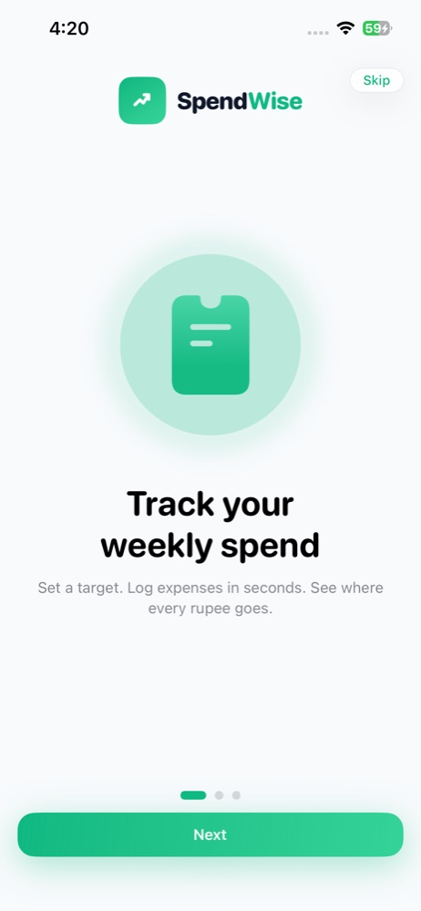
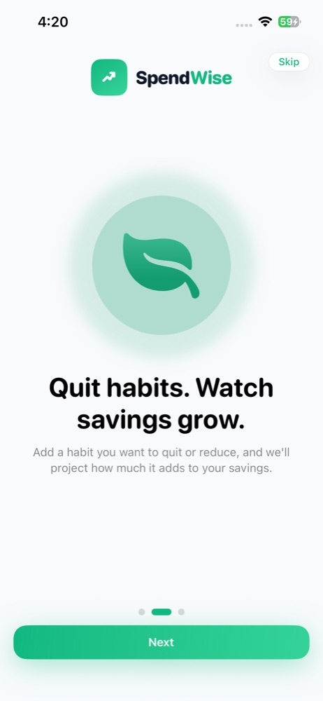
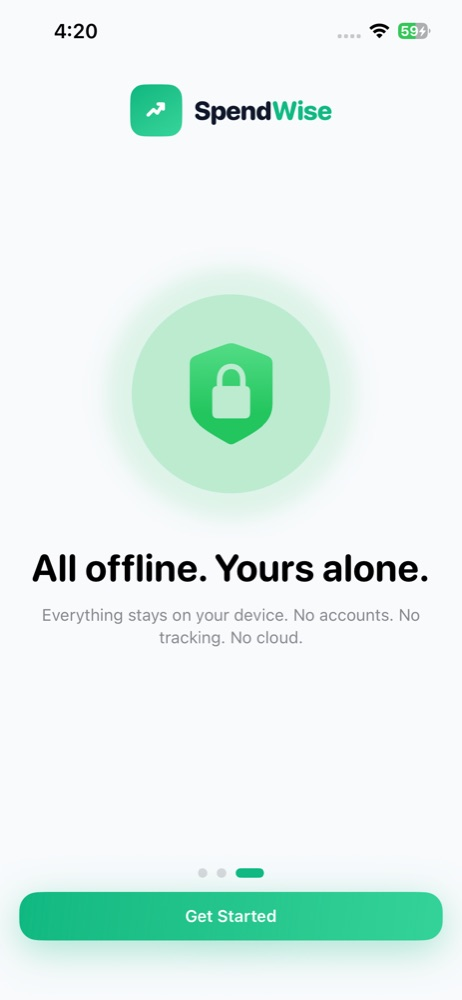
Dashboard
Am I okay this week? The ring answers it before you read anything.
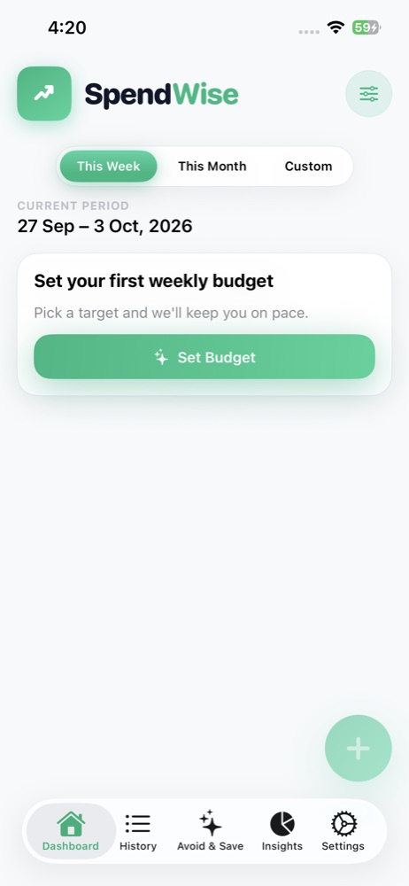
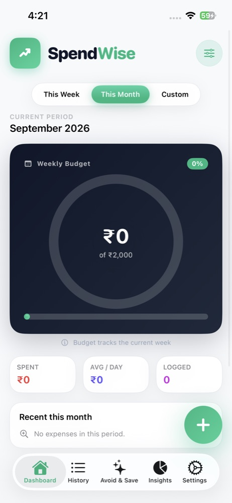
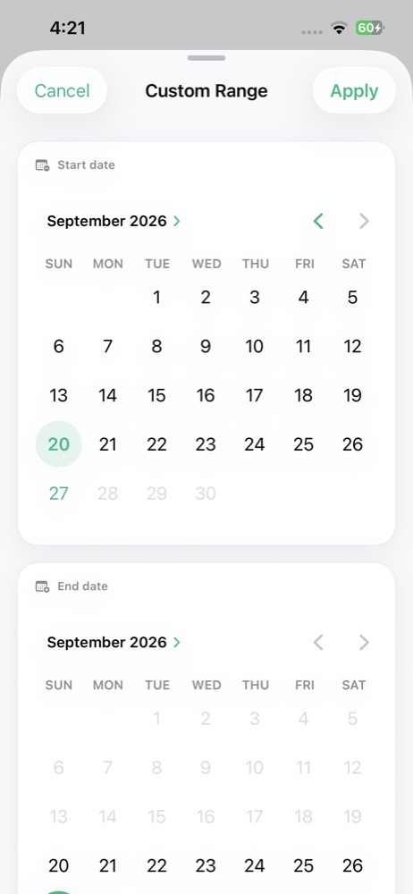
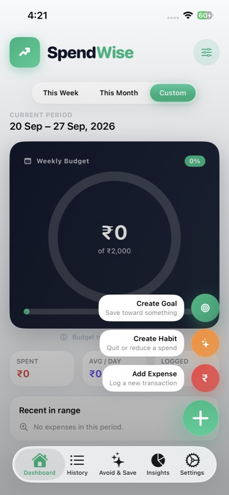
Avoid & Save
Where restraint turns into money. The headline is what you gain, not what you give up.
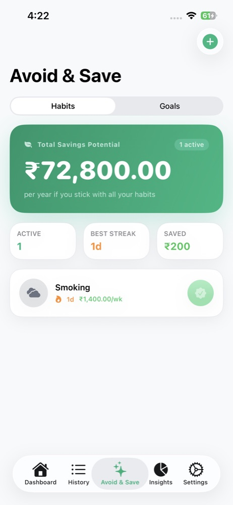
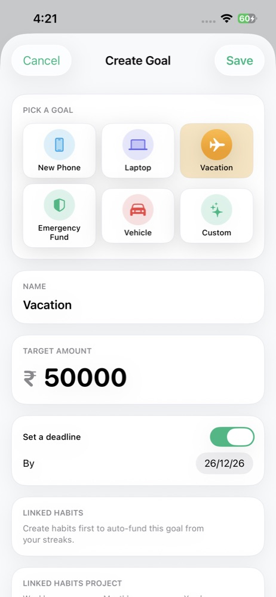
Insights
One screen, top to bottom: the number, the advice, then the evidence.
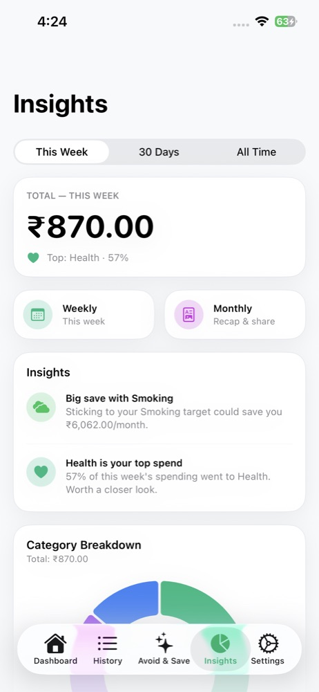
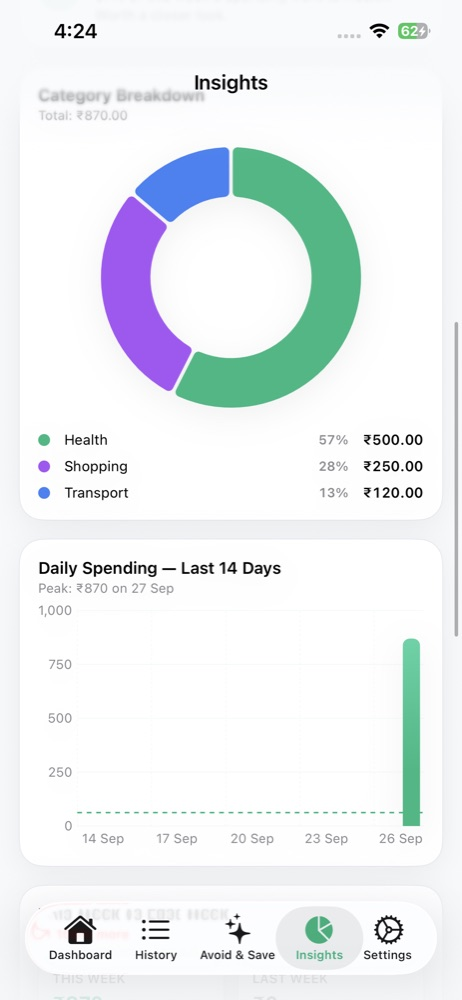
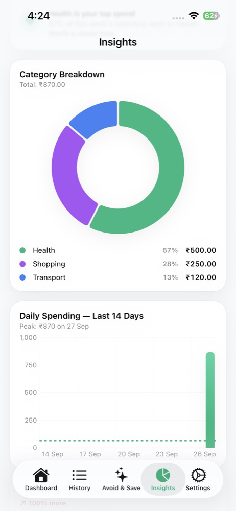
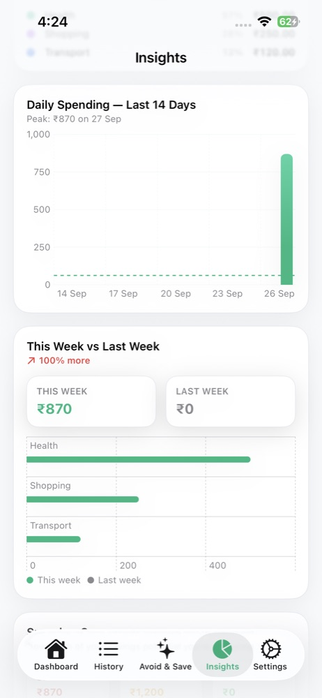
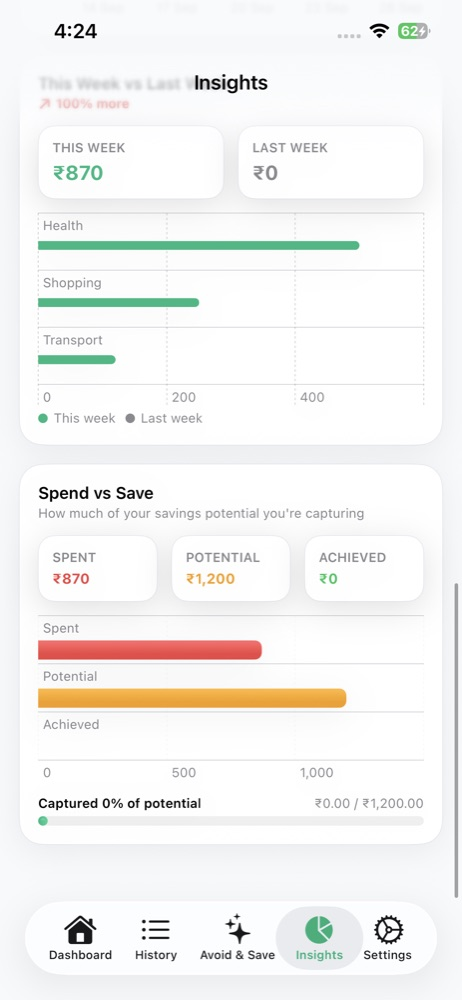
Summaries
The weekly and monthly reviews the Dashboard links out to.
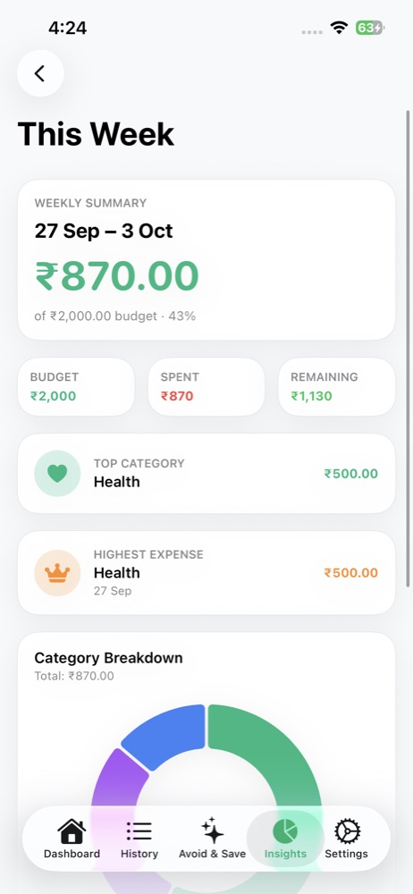
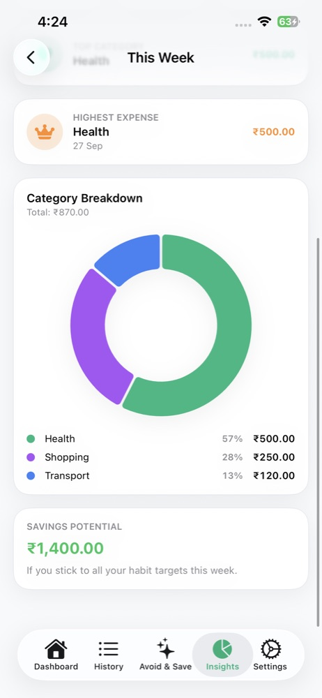
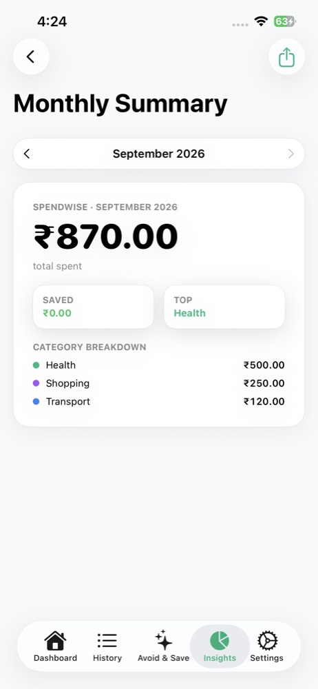
Settings
Week start, currency and an exit door for your data.
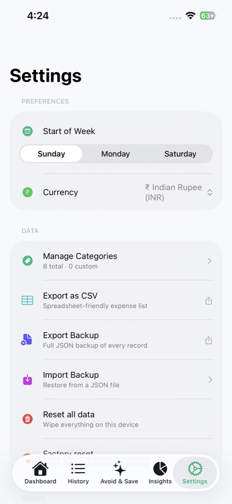
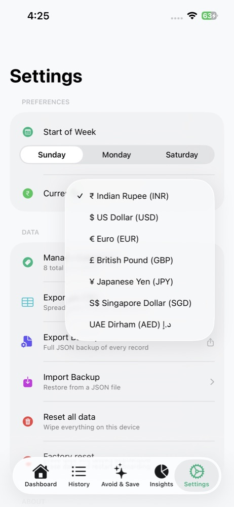
What changed, and what's next
What did building it teach me, and where would it go?
Iterations so far
Changes already made from reviewing the built app.
| What we noticed | What we changed |
|---|---|
| The brand mark didn't read well in dark mode | Made the splash and brand marks adapt to the theme |
| Users had no way to start over completely | Added Factory reset, separate from Reset all data, both with two-step confirmation |
| Onboarding felt rough and ignored Reduce Motion | Polished the carousel and made animations fall back to simple states |
| The About section in Settings had layout issues | Fixed the About section UI |
What's next
Home-screen widget
Budget ring and one-tap clean day without opening the app.
Evening reminder
A gentle nudge to mark the day before the streak is at risk.
Streak recovery
A kinder response to a missed day, so one slip doesn't end the habit.